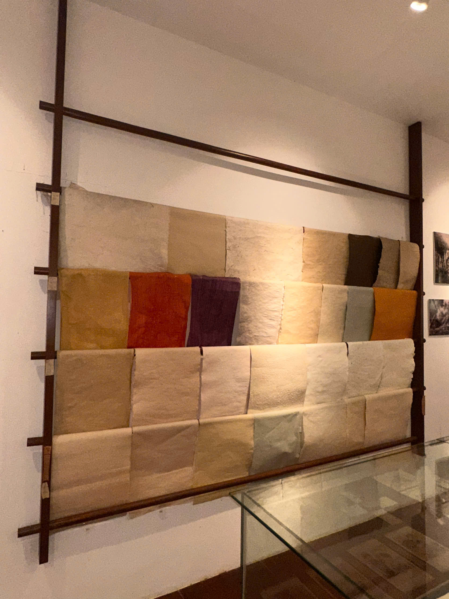
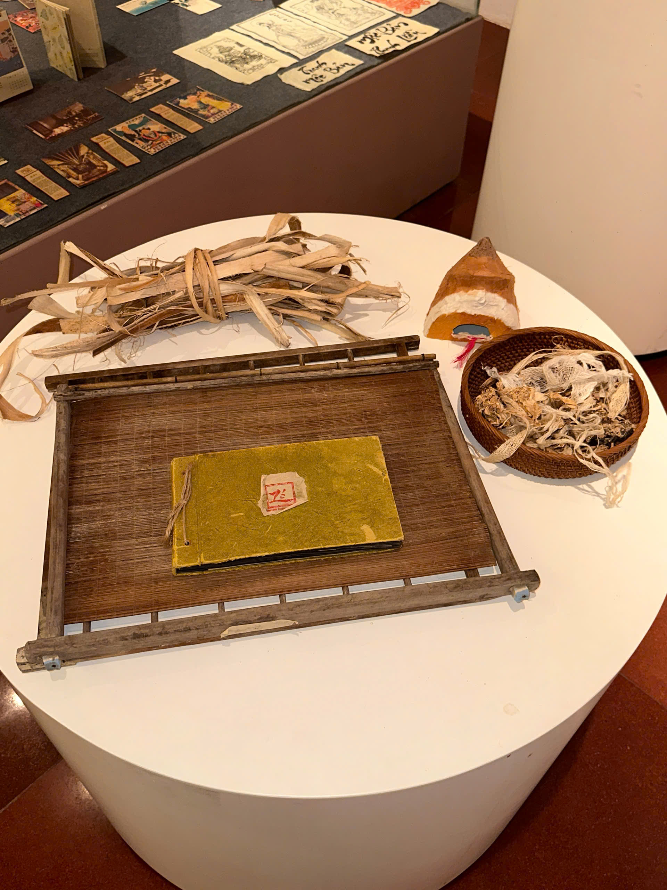

Phần còn lại nằm phía sau cánh cửa.
Di chuyển trong không gian 3D, đi theo hướng dẫn viên, xem tư liệu tại từng trạm và đặt câu hỏi bằng chữ hoặc giọng nói.
Di sản vật liệu · Trải nghiệm 3D
Từ lớp vỏ dó bền mà mềm, qua bể xeo, khung seo và những bức tường hong giấy — bước vào câu chuyện của một vật liệu đã đi cùng ký ức Tây Hồ.

Giấy thành hình từ những lớp sợi được dàn đều, ép nước, hong khô rồi bóc tách từng tờ.
Trước khi vào phòng
Phần tiền sảnh chỉ mở ra đường nét chính. Trong phòng trưng bày, hướng dẫn viên và mười tư liệu công đoạn sẽ đưa bạn đến gần từng vật liệu, dụng cụ và thao tác.
Sợi dó bền nhưng vẫn mềm; lớp vỏ cần được thu hoạch đúng tuổi để cây tiếp tục tái sinh.
Vỏ được ngâm trong nước, xử lý với nước vôi, nấu hoặc hấp rồi rửa kỹ trước khi làm bột.
Chất nhầy từ gỗ mò giữ nước thoát chậm, giúp huyền phù sợi dàn thành một lớp đều hơn.
Liềm seo múc huyền phù từ bể; chuyển động lắc nhẹ phân bố sợi trước khi tờ ướt được đặt vào chồng giấy.
Chồng giấy được ép bớt nước, dán lên tường, hong khô bằng quạt rồi bóc riêng từng lớp.
Vật liệu biết kể chuyện
Giấy dó không chỉ là thành phẩm. Mỗi thớ sợi, khung gỗ và lớp giấy ướt đều ghi lại một quyết định của người thợ.

Di chuyển trong không gian 3D, đi theo hướng dẫn viên, xem tư liệu tại từng trạm và đặt câu hỏi bằng chữ hoặc giọng nói.
Chức năng hỏi – đáp thông minh đang được phát triển.
Trong phiên bản tiếp theo, bạn có thể đặt câu hỏi về giấy dó, làng nghề Yên Thái, quy trình sản xuất, các hiện vật và nội dung đang được trưng bày.
Hiện tại, vui lòng khám phá các bảng thông tin hoặc chọn chức năng thuyết minh để tìm hiểu thêm.
Người hướng dẫn sẽ đưa bạn đến từng khu vực để giới thiệu các công đoạn chính trong quá trình sản xuất giấy dó.
Giấy dó là một trong những chất liệu thủ công truyền thống quan trọng của Việt Nam. Giấy được làm hoàn toàn bằng phương pháp thủ công từ phần xơ bên trong vỏ cây dó và một số loài cây có đặc tính tương tự. Quá trình sản xuất đòi hỏi nhiều thời gian, sự kiên nhẫn và kỹ năng của người thợ, bao gồm các công đoạn ngâm vỏ, nấu, giã, lọc, pha bột, xeo giấy, ép và phơi khô.
Trải qua nhiều thế kỷ, giấy dó được trân trọng nhờ đặc tính mềm, nhẹ, dai và có độ bền cao. Khi được bảo quản trong điều kiện phù hợp, giấy có thể tồn tại rất lâu ngay cả trong môi trường khí hậu nhiệt đới ẩm. Nhờ những đặc tính này, giấy dó từng được sử dụng rộng rãi để viết thư pháp, làm văn bản hành chính, chép kinh sách, lưu giữ tư liệu, sáng tác tranh dân gian và thực hiện các nghi lễ truyền thống.
Một trong những ứng dụng nổi tiếng nhất của giấy dó là tranh dân gian Đông Hồ. Các nghệ nhân sử dụng giấy để in những hình ảnh nhiều màu sắc, phản ánh đời sống sinh hoạt, tín ngưỡng, phong tục và những giá trị truyền thống của người Việt. Giấy dó còn được dùng để chép thơ, làm sách thủ công, văn bản nghi lễ và các tác phẩm trang trí.
Ngày nay, giấy dó không chỉ là một chất liệu lịch sử mà còn là biểu tượng của di sản văn hóa Việt Nam. Nhiều nghệ nhân và nghệ sĩ đương đại đang tiếp tục phục hồi, bảo tồn và sáng tạo với giấy dó trong hội họa, thiết kế, làm sách, nghệ thuật sắp đặt và các hoạt động trưng bày bảo tàng.
Gìn giữ giấy dó không chỉ là bảo tồn một kỹ thuật làm giấy thủ công, mà còn là gìn giữ ký ức nghệ thuật, tri thức truyền thống và bản sắc văn hóa của người Việt.
Làng Yên Thái thuộc vùng Kẻ Bưởi xưa, nằm bên Hồ Tây và sông Tô Lịch, ngày nay thuộc khu vực phường Bưởi, Hà Nội. Đây từng là một trong những làng làm giấy dó nổi tiếng nhất của kinh thành Thăng Long.
Nghề làm giấy dó tại Yên Thái được cho là đã xuất hiện từ thời Lý – Trần và có lịch sử hơn 800 năm. Trong nhiều thế kỷ, tiếng chày giã dó vang lên ngày đêm đã trở thành âm thanh quen thuộc của vùng đất này, được lưu truyền trong câu ca:
“Mịt mù khói tỏa ngàn sương,
Nhịp chày Yên Thái, mặt gương Tây Hồ.”
Giấy dó Yên Thái được làm thủ công từ vỏ cây dó. Người thợ phải trải qua nhiều công đoạn như ngâm vỏ, nấu, rửa, giã thành bột, lọc, xeo giấy, ép và phơi. Quá trình này đòi hỏi sự kiên nhẫn, kinh nghiệm và đôi tay khéo léo.
Thành phẩm có đặc điểm mỏng, nhẹ nhưng dai và bền. Giấy ít bị nhòe khi viết, có thể được lưu giữ trong thời gian dài nếu bảo quản tốt. Vì vậy, giấy dó từng được sử dụng để chép kinh sách, in sách cổ, viết văn thư, làm sắc phong, ghi chép tài liệu quan trọng và sáng tác thư pháp.
Từ thời Lê đến thời Nguyễn, giấy dó Yên Thái còn được dùng trong nhiều loại hình nghệ thuật và tín ngưỡng. Chất liệu này gắn liền với tranh dân gian Đông Hồ, tranh Hàng Trống và nhiều di sản chữ viết của người Việt.
Khi giấy sản xuất công nghiệp trở nên phổ biến, nghề làm giấy thủ công tại Yên Thái dần suy giảm. Đến cuối thế kỷ XX, hoạt động sản xuất gần như không còn được duy trì tại địa phương. Tiếng chày giã dó từng vang khắp làng cũng dần lùi vào ký ức.
Ngày nay, nghề giấy dó Yên Thái đang được giới thiệu và phục dựng thông qua các không gian văn hóa, hoạt động trải nghiệm và chương trình giáo dục di sản. Những nỗ lực này giúp công chúng hiểu rõ hơn về kỹ thuật làm giấy truyền thống và gìn giữ ký ức của một làng nghề từng nổi tiếng khắp kinh thành Thăng Long.
Giấy dó không chỉ được sử dụng để viết, vẽ và lưu giữ tài liệu mà còn có thể được tạo thành nhiều sản phẩm thủ công, trang trí và ứng dụng trong đời sống. Nhờ đặc tính nhẹ, dai, bền, thấm hút tốt và có bề mặt xơ tự nhiên, giấy dó mang đến vẻ đẹp mộc mạc, tinh tế và khác biệt cho mỗi sản phẩm.
Từ những tờ giấy được xeo hoàn toàn bằng tay, nghệ nhân có thể cắt, gấp, dán, khâu, in, vẽ, bồi nhiều lớp hoặc kết hợp với gỗ, tre, vải và các vật liệu tự nhiên khác để tạo thành những sản phẩm hoàn chỉnh.
Mỗi sản phẩm từ giấy dó đều lưu giữ dấu vết của quá trình làm giấy thủ công và bàn tay của người nghệ nhân. Việc sử dụng giấy dó trong các sản phẩm mới không chỉ tạo ra giá trị thẩm mỹ mà còn góp phần duy trì, quảng bá và phát triển một chất liệu văn hóa truyền thống của Việt Nam.
Vỏ cây dó là một trong những nguyên liệu quan trọng được sử dụng để tạo nên giấy dó truyền thống. Phần có giá trị nhất nằm ở lớp xơ bên trong vỏ cây. Những sợi xơ này có độ dài và độ dai tự nhiên, góp phần tạo nên đặc tính nhẹ, bền và khó rách của giấy dó.
Sau khi được thu hoạch, vỏ cây cần trải qua nhiều công đoạn xử lý trước khi có thể trở thành bột giấy. Người thợ loại bỏ phần vỏ ngoài, làm sạch phần xơ, sau đó ngâm và nấu để nguyên liệu mềm hơn. Các dải vỏ đã xử lý tiếp tục được rửa sạch và giã kỹ cho đến khi các sợi xơ tách ra.
Phần xơ sau khi giã được hòa với nước để tạo thành hỗn hợp bột giấy. Người thợ sử dụng mành xeo để vớt và phân bố các sợi xơ thành một lớp mỏng, sau đó ép nước và phơi khô để tạo thành tờ giấy hoàn chỉnh.
Chất lượng của vỏ cây, nguồn nước và kỹ thuật xử lý đều ảnh hưởng trực tiếp đến màu sắc, bề mặt, độ dai và tuổi thọ của giấy. Vì vậy, việc lựa chọn và chuẩn bị nguyên liệu là một bước quan trọng trong nghề làm giấy dó.
Hiện vật mô phỏng một dụng cụ chứa các dải vỏ cây dó trước hoặc trong quá trình xử lý. Những dải vỏ có màu nâu tự nhiên, dạng dài và giàu xơ. Đây là hình ảnh giúp người xem hình dung nguyên liệu ban đầu trước khi trải qua các bước ngâm, nấu, làm sạch và giã thành bột giấy.
Quy trình xử lý vỏ cây dó:
1. Thu hoạch và bóc vỏ
2. Loại bỏ phần vỏ ngoài
3. Ngâm và nấu cho mềm
4. Rửa sạch và giã thành xơ
5. Hòa bột để chuẩn bị xeo giấy
Từ những dải vỏ thô ban đầu, người thợ phải dành nhiều thời gian và công sức để tạo thành hỗn hợp bột giấy đủ mịn và sạch.
Sau khi trải qua các công đoạn xử lý nguyên liệu, giã xơ, pha bột, xeo, ép và phơi, giấy dó thành phẩm có bề mặt nhẹ, mềm và mang những đường vân xơ tự nhiên. Do được tạo hoàn toàn bằng phương pháp thủ công, mỗi tờ giấy có sắc độ, kết cấu và dấu vết riêng, không hoàn toàn giống nhau.
Ưu điểm nổi bật của giấy dó là trọng lượng nhẹ nhưng có độ dai và độ bền cao. Các sợi xơ dài liên kết với nhau giúp giấy khó bị rách hơn khi gấp, cuộn hoặc sử dụng đúng cách. Khi được bảo quản trong điều kiện phù hợp, giấy có thể tồn tại lâu dài và thích hợp cho việc lưu giữ văn bản, sách, tranh và các tác phẩm nghệ thuật.
Bề mặt giấy có khả năng thấm hút tốt, phù hợp với mực tàu, màu nước, màu tự nhiên, thư pháp và nhiều kỹ thuật in thủ công. Mực và màu có thể thấm vào lớp xơ, tạo nên sắc độ mềm mại, tự nhiên và giàu chiều sâu.
Giấy dó còn có thể được cắt, gấp, khâu, bồi nhiều lớp hoặc kết hợp với tre, gỗ, vải và các vật liệu tự nhiên khác. Nhờ đó, chất liệu này được sử dụng trong sách thủ công, sổ tay, tranh, thiệp, mặt nạ, quạt, đèn trang trí, hộp quà và nghệ thuật đương đại.
Khác với nhiều loại giấy công nghiệp có bề mặt đồng đều, giấy dó thể hiện rõ dấu vết của quá trình làm thủ công. Sự khác nhau về vân xơ, độ dày và sắc độ không được xem là khuyết điểm, mà chính là đặc trưng tạo nên giá trị thẩm mỹ của từng tờ giấy.
Giá trị của giấy dó nằm trong sự kết hợp giữa độ bền, khả năng ứng dụng và vẻ đẹp tự nhiên. Từ một chất liệu truyền thống, giấy dó vẫn có thể tiếp tục xuất hiện trong nghệ thuật, thiết kế và đời sống hiện đại.
Khung xeo là một trong những dụng cụ quan trọng nhất trong quá trình làm giấy dó. Dụng cụ này thường gồm một khung bằng gỗ hoặc tre và một lớp mành xeo được tạo từ những nan tre nhỏ, sợi đan hoặc vật liệu có khả năng giữ lại xơ giấy nhưng vẫn cho nước thoát qua.
Trong công đoạn xeo giấy, người thợ nhúng khung vào bể chứa hỗn hợp nước và bột xơ dó. Sau đó, khung được nâng lên và chao nhẹ theo nhiều hướng để các sợi xơ phân bố đều trên bề mặt mành.
Khi nước chảy qua các khe của mành, một lớp xơ mỏng còn lại trên bề mặt. Lớp xơ này chính là hình dạng ban đầu của tờ giấy dó. Người thợ tiếp tục chuyển lớp giấy ướt sang chồng giấy để ép nước và phơi khô.
Độ đều của tờ giấy phụ thuộc rất nhiều vào kỹ năng điều khiển khung. Nếu thao tác không cân bằng, giấy có thể bị chỗ dày, chỗ mỏng, xuất hiện lỗ hoặc mép không đều. Vì vậy, công đoạn xeo giấy đòi hỏi sự tập trung, kinh nghiệm và đôi tay khéo léo của người thợ.
Hiện vật mô phỏng bộ khung và mành xeo được sử dụng để tạo hình tờ giấy dó. Các thanh gỗ hoặc tre tạo nên phần khung chắc chắn, trong khi phần nan mảnh bên trong giúp giữ lại xơ giấy và để nước thoát xuống. Dù có cấu tạo tương đối đơn giản, đây là dụng cụ quyết định trực tiếp đến kích thước, độ dày, độ đều và bề mặt của tờ giấy thành phẩm.
1. Hòa bột xơ dó với nước trong bể xeo
2. Nhúng khung và mành xeo vào hỗn hợp
3. Nâng khung lên và chao nhẹ để xơ phân bố đều
4. Để nước thoát qua mành
5. Chuyển lớp giấy ướt sang chồng giấy để ép và phơi
Mỗi lần nhúng và chao khung có thể tạo nên một lớp giấy. Độ dày của giấy phụ thuộc vào lượng bột, số lần xeo và kỹ thuật của người thợ.
Khung xeo không chỉ là một vật dụng để vớt bột giấy. Đây là công cụ giúp người thợ kiểm soát hình dạng và chất lượng của từng tờ giấy. Hai người cùng sử dụng một loại khung nhưng có kỹ thuật khác nhau vẫn có thể tạo ra những tờ giấy có độ đều và bề mặt khác nhau. Vì vậy, giá trị của giấy dó không chỉ nằm ở nguyên liệu mà còn nằm ở kinh nghiệm sử dụng dụng cụ của người thợ.
Trong lịch sử, giấy dó từng được sử dụng để chép sách, viết văn bản, lưu giữ tư liệu, sáng tác thư pháp và tạo nên nhiều hiện vật có giá trị văn hóa.
Nhờ đặc tính nhẹ, dai và có độ bền cao khi được bảo quản phù hợp, giấy dó trở thành chất liệu quan trọng trong việc lưu giữ tri thức và ký ức qua nhiều thế hệ.
Hiện vật này là mô hình phục dựng, giúp người xem hình dung cách giấy dó từng xuất hiện trong sách cổ, văn bản viết tay và các tài liệu truyền thống.
Sau khi được xeo và ép bớt nước, những tờ giấy còn ướt phải được tách và làm khô cẩn thận.
Trong quá trình này, người thợ cần thao tác nhẹ nhàng để giấy không bị rách, nhăn hoặc biến dạng. Điều kiện phơi và cách đặt giấy có thể ảnh hưởng đến độ phẳng, màu sắc và bề mặt của thành phẩm.
Khi đã khô hoàn toàn, giấy mới có thể được phân loại, cắt, viết, vẽ, in hoặc sử dụng để làm các sản phẩm thủ công.
Giấy dó là chất liệu phù hợp với nhiều kỹ thuật in thủ công nhờ khả năng thấm mực và bề mặt xơ tự nhiên.
Trong kỹ thuật in ván khắc, hình ảnh được chạm trên bề mặt gỗ. Mực hoặc màu được phủ lên phần nổi của ván, sau đó được ép lên giấy để tạo thành hình in.
Mỗi lớp màu có thể sử dụng một bản khắc riêng. Quá trình căn chỉnh, phủ màu và ép giấy đòi hỏi sự chính xác cùng kinh nghiệm của người thợ.
Bề mặt giấy dó giúp màu sắc có độ mềm, tự nhiên và mang dấu ấn thủ công riêng.
Yên Thái thuộc vùng Kẻ Bưởi xưa, gần Hồ Tây, Hà Nội. Nơi đây từng được biết đến như một khu vực làm giấy thủ công nổi tiếng của kinh thành Thăng Long.
Nghề làm giấy không chỉ diễn ra trong một căn nhà riêng biệt mà được phân chia qua nhiều khu vực của làng. Vỏ cây được tập kết và sơ chế tại sân; nguyên liệu được ngâm, nấu, rửa và giã tại các khu làm việc; bột giấy được đưa tới bể xeo; những tờ giấy ướt tiếp tục được ép và phơi tại các khoảng sân thoáng.
Mỗi công đoạn đòi hỏi kinh nghiệm, sức lao động và sự phối hợp giữa nhiều thành viên trong cộng đồng. Vì vậy, nghề làm giấy từng góp phần hình thành nhịp sống, không gian lao động và ký ức văn hóa riêng của làng Yên Thái.
Đây là mô hình phục dựng mang tính minh họa, được xây dựng nhằm giúp người xem hình dung không gian và các hoạt động cơ bản của làng nghề giấy dó Yên Thái.
Cách bố trí nhà cửa, khu sản xuất, cảnh quan, nhân vật và dụng cụ trong mô hình đã được giản lược và sắp xếp lại để phù hợp với mục đích trưng bày. Mô hình không phải là bản tái hiện chính xác tuyệt đối về quy mô, kiến trúc hoặc vị trí lịch sử của làng Yên Thái trong một thời điểm cụ thể.
Chế độ đồ họa Cao yêu cầu máy tính có cấu hình tương thích để đảm bảo trải nghiệm mượt mà. Nếu bạn gặp tình trạng giật, lag, vui lòng chuyển về Trung bình hoặc Thấp.